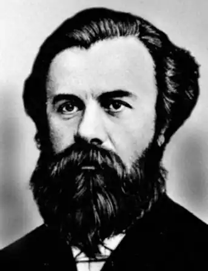

Драгоманов Михайло Петрович
(1841-1895)
публіцист, історик, літературознавець, фольклорист, економіст, філософ, громадський діяч Народився Михайло Петрович Драгоманов 18 вересня 1841 року в Гадячі на Полтавщині. Батьки, дрібнопомісні дворяни, нащадки козацької старшини, були освіченими людьми, поділяли ліберальні для свого часу погляди. "Я надто зобов’язаний своєму батьку, який розвив у мені інтелектуальні інтереси, з яким у мене не було морального розладу і боротьби..." — згадував пізніше Михайло Петрович. З 1849 по 1853 рік юнак навчався в Гадяцькому повітовому училищі, де, з-поміж інших дисциплін, виділяв історію, географію, мови, захоплювався античним світом. Продовжував своє навчання допитливий хлопець у Полтавській гімназії. Це були часи накопичення знань, розширення поля інтересів, захоплення новітніми політичними течіями. М.Драгоманов вражав викладачів своєю надзвичайною цілеспрямованістю, працьовитістю, освіченістю. Його сестра Ольга (майбутня письменниця Олена Пчілка, мати Лесі Українки) згадувала, що "книжок... Михайло перечитав ще в гімназії таку силу і таких авторів, що багато учнів середніх шкіл пізніших часів... здивувались би, почувши, що між тими авторами були й такі... як Шлосер, Маколей, Прескот, Гізо". Восени 1859 року М.Драгоманов вступає на історико-філологічний факультет Київського університету. Тут у нього з’являються значно ширші і більші можливості вдосконалювати свою загальну освіту, повніше і живіше знайомитися з тими суспільними і політичними процесами, що постійно зароджувалися у неспокійному студентському середовищі. Університет тих часів являв собою один із найважливіших осередків наукового, культурного і громадського життя. Значною мірою це була заслуга попечителя цього закладу, славетного хірурга М.Пирогова, який "допустив у Києві de facto академічну свободу, схожу на європейську". М.Драгоманов намагався встигати й органічно поєднувати процес навчання з практичною громадською роботою, на яку підштовхували розбуджені загальною ситуацією політичні настрої. Етапним у справі становлення М.Драгоманова як політичного і громадського діяча став його виступ над труною Шевченка у Києві, коли прах великого Кобзаря перевозили до Чернечої гори. Слова, сказані тоді ще юним промовцем: "Кожний, хто йде служити народу, тим самим надіває на себе терновий вінець", — виявилися пророчими. У 1863 році М.Драгоманов стає членом Громади. Ці об’єднання виникали як форма пробудження свідомості національної інтелігенції до пізнання української літератури, історії, культури,народного побуту, права. Пізніше у 70-х рр. з’явилися нові, молоді Громади, в статутах яких уже стояло питання про "самостійне політичне існування" України з "виборним народним правлінням". З середини 60-х років становлення М.Драгоманова як ученого відбувається у тісному взаємозв’язку з його публіцистичною діяль-ністю. По суті, в цих роботах М.Драгоманова — історичних, етнографічних, філологічних, соціологічних — мимоволі відбувається зміщення акцентування на політичне підгрунтя означуваного питання. У 1871 році Київський університет відряджає М.Драгоманова за кордон. Замість запланованих двох років молодий учений пробув там майже три, відвідавши за цей час Берлін, Прагу, Відень, Флоренцію, Гейдельберг, Львів. Особливе місце в політично-публіцистичній діяльності М.Драгоманова посідає Галичина. Він був одним з перших, хто намагався розбудити галицьке громадське життя, піднести рівень суспільної свідомості. Трирічне закордонне турне М.Драгоманова було надзвичайно плідним для молодого вченого. Він тепер міг критично оглянути й оцінити свої переконання, зіставляючи їх з наочним західноєвропейським досвідом. Наступ реакції, повторне запровадження утисків проти відроджуваних проявів української культури змусили М.Драгоманова виїхати за кордон і стати політичним емігрантом. Восени 1875 року Михайло Петрович через Галичину та Угорщину вирушає до Відня з наміром створити там осередок національної політичної думки, започаткувати випуск української газети. Прогресивний громадсько-політичний збірник "Громада" М.Драгоманов створив у Женеві восени 1876р. Було видано п’ять томів збірника. Головна тема "Громади" — дати якнайбільше матеріалів для вивчення України і її народу, його духовних починань і устремлінь до свободи і рівності серед світової спільноти. З другої половини 80-х рр. М.Драгоманова запрошують до співпраці ряд провідних видань Галичини. Становлення і розвиток радикальних рухів у Західній Україні, за свідченням І.Франка, стало останньою і, мабуть, найбільшою радістю в житті Драгоманова. У 1889 році Михайла Петровича запрошують на кафедру загальної історії історико-філологічного факультету Софійського університету Болгарії. Ім’я М.Драгоманова асоціювалося в свідомості прогресивної громадськості з боротьбою слов’янських народів за свободу, автономію, братерство. Виважений і проникливий політик, М.Драгоманов мучився тією задушливою загальною атмосферою, що склалася на теренах Російської імперії у ставленні до національних меншин. Це був період перед черговим тотальним наступом на вільнолюбний настрій народу. "Пригнічений стан духу значною мірою збільшується від усвідомлення печального стану справ в Україні", — так свідчила Леся Українка про останні дні життя М.Драгоманова. Тимчасові поліпшення загального стану сприяли сплескам творчого піднесення, але несподівана смерть від розриву аорти 20 червня 1895 року обірвала життя великого вченого і громадського діяча. Похований М.Драгоманов у Софії. Громадська діяльність і творча спадщина М.Драгоманова забезпечили йому особливе місце в історії суспільно-політичної і правової думки не тільки України. Його можна назвати творцем своєрідної конституціоналістичної теорії, палким прихильником збагачення вітчизняної політики й права цінностями світового досвіду. "Драгоманов перший із російських публіцистів дав російській демократії широку і ясну програму... перший блискуче й доступно пояснив зміст і значення конституційного ладу, особливо прав особи та принципів самоуправління..." — оцінюючи діяльність М.Драгоманова, зазначив П.Струве. Ще ширше означив різнобічну діяльність М.Драгоманова на користь українського суспільства І.Франко, називаючи його "духовним батьком", "великим критиком і бистрим, історично вишколеним умом", "найбільшим публіцистичним талантом нашої нації", "могутньою постаттю" і "правдивим учителем". Своєрідність М.Драгоманова як прогресивного політичного і громадського діяча криється перш за все в його широкому, поліаспектному підході до такого важливого поняття, як "конституціоналізм", яке він нерідко доповнював, збагачував, інколи навіть ототожнюючи його з поняттям політичної свободи. Драгомановське розуміння конституціоналізму включало в себе такі чинники, як політична свобода суспільства і особистості, що реалізувалася через народне представництво в центрі, самоуправління на місцях, дотримання прав і свобод людини. Великого значення з огляду на історичну перспективу і розвиток нинішньої суспільно-політичної ситуації у світі набуває уявлення М.Драгоманова про визначальний критерій і мету всіх різноманітних суспільних відносин: "Основними для формування тих відносин... повинні бути поперед усього основні права чоловіка — свобода думки й слова, зборів та коаліцій, толеранція політичних та релігійних переконань... віри й безвірства". Виваженим, діалектично та історично обгрунтованим було переконання вченого, що попри все ті відносини "ніколи в цілім світі не будуть шанобливо однакові...". Драгоманов чітко окреслив і можливості загальних революційних процесів. Він був упевнений, що будь-яка революція має в основі своїй політичний характер, міняє політичні форми панування, але "...не має сили сотворити новий лад суспільного життя, бо сей мусить органічно і звільна виростати з попередніх, як дерево з даного грунту, а продиктувати його ніякими едиктами не можна". Послідовно і твердо він відстоював еволюційну правоту будь-якого розвитку, вважаючи революції явищами спонтанними й короткочасовими, хоча все в тому ж загальному тоні історичного поступу. Як точно і правильно підмітив І.Франко, "Драгоманов — еволюціоніст, вірив у ненастанний органічний розвій не лише в сфері матеріальних явищ, але також у сфері духу, віри, літератури й етики. Властивим плодючим елементом у тій еволюції вважав людське — індивідуум, його душу, волю й інтелігенцію (розум)". Сила історичного методу М.Драгоманова в тому, що вчений і публіцист умів органічно сприймати в єдності конкретного історичного процесу загальне й осібне, національне і вселюдське, індивідуальне й суспільне у їх найтіснішому взаємозв’язку. Керуючись принципами культурного синтезу національного та інтернаціонального, Михайло Петрович Драгоманов показав, теоретично обгрунтувавши, що в такому поєднанні нема суперечності, і провів цей принцип через проблеми конституціоналізму, політичної свободи, прав людини, національного самовизначення, місцевого самоврядування, політичної боротьби, подав порівняльний нарис політичних ідей, намітив віхи поступу на майбутнє і створив всебічну і повну картину свого сьогодення. "Своїм писанням, зарівно як і прикладом свого життя, він дав нам високий взірець неустрашеного і незламного борця поперед усього за свободу думки, досліду, критики та розвою людської одиниці й народів і через те все буде предметом гордості і честю для народу, що видав такого чоловіка", — писав І.Франко, не зайво нагадуючи українському люду про його достойника. Унікальність постаті М.Драгоманова як ученого не тільки, вірніше не стільки в площині політичної публіцистики, як у сфері власне політології. Його можна вважати засновником національної політології, істориком політичних учень. Саме він створив нарисні добірки про розвиток політичних ідей у країнах Західної Європи, всебічно розглянувши теорію освіченого абсолютизму, лібералізму, і, запозичивши ряд основних прогресивних положень із декількох напрямків, подав концентроване обгрунтування своєї конституційно-правової доктрини. "Вся практична мудрість людська може бути в тому, щоб убачити напрямок духу світового, його міру, закон і послужитись тим рухом.